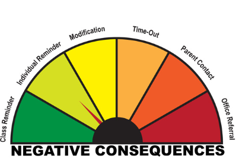

About Me
I am an educator dedicated to cultivating engaging, supportive, and structured learning environments.
My Philosophy
My philosophy in teaching is that all students can and are learning, it just might be at different time frame as others. It is important for students to feel safe and wanted in the classroom. Students spend 6 hours at school, and they need to learn both academic and social-emotional skills which is done in a classroom. Behavior management is necessary in the classroom to help the classroom run smoothly and for all students to have the opportunity for learning. I have students coming from all different walks of life and we can be a team and have relationships. I will have high expectations and high love for all the students who walk into my classroom.
Classroom Management Plan
This management plan is designed for 6th grade. At this age, students have been in school for 7 years and have a firm understanding of what to expect in a classroom. They are reaching the level of testing boundaries, peer pressure and acceptance from peers, and developing complex executive function skills. My classroom rules will be clear and consistent allowing them to focus on learning and succeed in my classroom. Because 6th graders are going through puberty, cognitive, and development changes, and focused on their peers the rules will need to be guardrails and supports. Instead of rules, I will call them expectations because 6th graders want to be treated as adults and rules to them could make them feel belittled. I plan to present my expectations on the first day of class and have a discussion about what could be difficult about them, and what is easy. We can also discuss the necessity of the expectations and provide examples so that everyone understands what they mean.
Classroom Expectations & Rationales
- Expectation 1: Own Your Impact
- Rationale: 6th graders are experiencing social and emotional development. They understand kindness and that they need to be kind, but a rule saying "be kind" would be childish. Saying Own Your Impact will help students see that their actions make a difference to others. It will limit hurt feelings and build a community because students will be expected to understand consequences.
- Expectation 2: Be Launch Ready
- Rationale: Students will be expected to be ready to learn as soon as the bell rings. There isn't a lot of time during the day, and if students are ready by the beginning of the day, the day will be productive. This also helps the class start on time. This will limit the time necessary for getting supplies and finding homework. This allows students to quickly focus on learning instead of logistics. It also eliminates the time necessary to settle in. This improves their Executive Function skills. It focuses on skills that they will need in the future.
- Expectation 3: Engage with Integrity
- Rationale: Students are using the Internet and need to use it with integrity. They are also active learners, not passive learners, so using the word engagement shows that in the classroom they are expected to learn. This not only focuses on the Internet, but also sharing answers and working together. They need to learn to have integrity without me standing behind them watching to make sure they are following the expectations of doing their work.
- Expectation 4: Take the Lead
- Rationale: Students will be expected to take charge of their learning. They get to choose to pay attention, to participate, and they are responsible for their learning. They are experiencing peer pressure, and wanting to push against rules. They feel like they are too cool for school, and so they need to learn how to take charge of their learning.
Steps Taken to Teach the Expectations
- Introduce
- On the first day of class I will introduce the 4 expectations that I have for them. I will show a video of chaos and explain that our classroom will not be like that because we are practicing skills necessary for them in their career and future. I will explain why it is important. I can model examples of each of them.
- Discuss
- Students and I will have discussions about what they think and examples that they think. They will explain why they think it is important and how it will provide a safe environment for learning. Students will then fill out a t-chart that focuses on why it helps them, why it might be hard to follow the expectation. We will also discuss which ones might be hard when our peers are watching us.
- Model
- Students can act out examples and nonexamples of what each of the expectations looks and sounds like. Students can act out what "too cool for school" is, and how Take the Lead will look like in the classroom. Students will describe what Be Launch Ready looks like and sounds like.
- Practice
- Throughout the first week students will practice the expectations. We will run 2-minute practice drills about Being Launch Ready. Students will line up outside the classroom and have two minutes to get to their seat and start the morning work. We can do that several times throughout the week to see if they can beat their record each time. Students will also have a chance to practice taking charge of their learning through practicing active listening.
- Review
- Every Monday we will go over who did really well with the expectations, and discuss how the following week we can improve on following the expectations. Some students might have a goal to participate in conversations, and so we can encourage and support those goals. After breaks and when students are struggling with following one of the expectations we will do a brief overview about what the rules mean and how to follow them. We can also discuss how they used these skills during their breaks and why the rules are connected to skills that they will need as they get older.
Positive Consequences
My classroom focuses on following the expectations and is recognized by both group and individual incentives.
- Group: Team points awarded for following expectations. If they reach a set amount of points by Friday, they will earn Flex time. In order to participate however, they need to have done all of their work during the week.
- Individual: Teacher will pick a student each day who was following the expectations and working hard will get a phone call home about the positive things that their child had done. Students will also get a sticky note during the day when they are following the expectations.
I will use positive consequences because it improves behavior a lot more than negative consequences because it shows the students what the teacher is looking for instead of just punishing a child. I will not remove team points. Once they earn them, they have earned them.
Negative Consequences
I will use a continuum starting with a:
- Class reminder: When misbehavior is happening the class will get a reminder about following the expectations or even just a nonverbal cue to follow the expectations. No student will be targeted.
- Individual reminder: I will use my surface strategies like proximity or nonverbally pointing out the expectation that they are not following to get them back on task.
- Modification: This could be a seat change, or a small privilege being taken away, or what is causing the distraction being taken away or being asked to put the item in their backpack.
- Time Out: This includes going to a specific spot in the classroom like a calm down corner where they fill out a form that they explain their behavior, what expectation they broke, and how they are going to adjust their behavior returning to the group. This could also be done in a different room as well.
- Parent communication: Parent will be contacted if behavior continues. It can happen during, after, or end of day.
- Office referral: Written office referral given to administration.
Preventative Strategies
These strategies would be used in the first two intrusive levels of negative consequences to help manage behavior.
- Proximity
- This involves moving closer to the students who are starting to misbehave so that they naturally get themselves back on task without disrupting the flow of the lesson.
- Redirecting
- Allows for individual or class reminders for students to get back on task while staying the least intrusive. This includes nonverbal tactics like tapping on a desk or pointing directly to what they should be doing.
- Use of Humor
- Allows for anxiety or negative feelings to disperse calmly before behaviors escalate or get worse.
- Signaling
- Utilizing quick, pre-established visual or verbal cues to subtly catch a student's attention and prompt a behavior correction.
Challenging Behavior Plan
I would use the Acting Out Cycle from IRIS to help manage those challenging behaviors. As a teacher, I will be actively looking for each of these phases to try and circumvent the students from reaching the peak phase.

When students are starting to be triggered, my goal is to help them use their soft skills to stop their behavior from getting worse. Students need to practice intervention strategies like deep breathing, pushing against a wall, or going on a brief walk to support themselves. Until they reach that level of independence, I will actively step in to help prevent triggers and agitation from continuing.